library(tidyverse)Data Visualization
Data Visualization
How To:
There are two main options for making plots in R. We can use the default, or Base R, functions, or we can use the ggplot2 package, which is already loaded in if you have the tidyverse.
Base R:
The code below will generate a scatterplot. The first two arguments are vectors of the same length. The next three generate the titles and labels, and the last argument is the point size.
x <- c(1,2,3,4,5)
y <- c(2,3,4,5,7)
z <- c("joe", "sam", "joe", "sam", "steve")
df <- data.frame(x,y,z) #saves the two vectors into a dataframe
plot(df$x, df$y, main = "title", xlab = "x-axis title", ylab = "y-axis title", pch = 19) 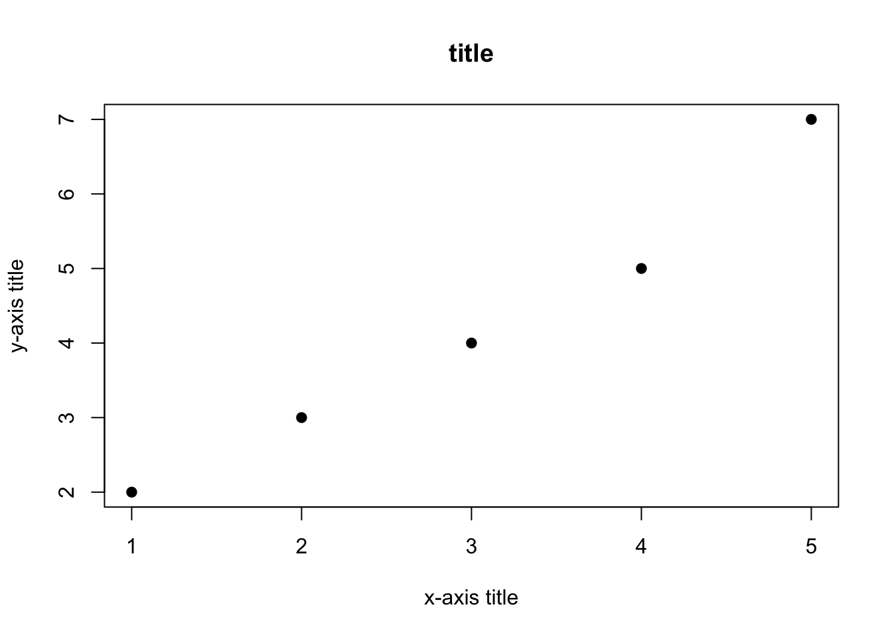
The code below would add a regression line to the plot you just generated. It builds on top of the last plot you run in that block.
plot(df$x, df$y, main = "title", xlab = "x-axis title", ylab = "y-axis title", pch = 19)
abline(lm(y ~ x, data = df), col = "blue")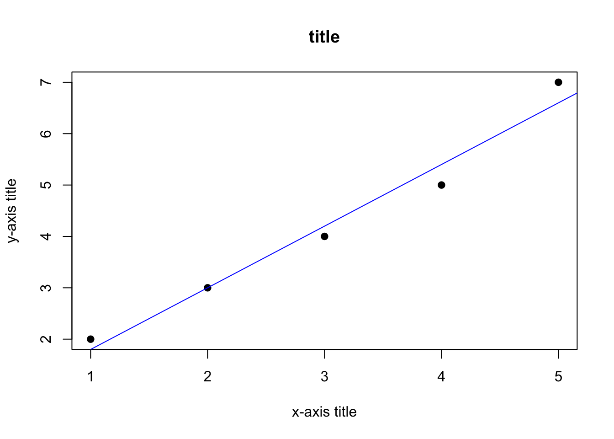
The code below generates a barplot. Notice how the syntax is very similar to the scatterplot. Barplots are a great tool to visualize the frequency of discrete variables.
# Bar plot of one variable
barplot(df$x, main = "title", xlab = "x-axis title", ylab = "y-axis title")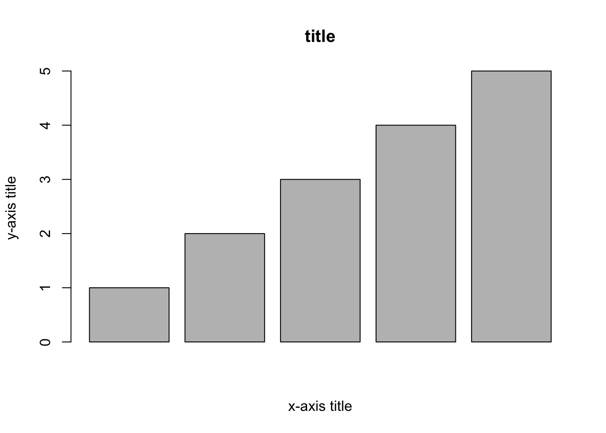
The code below demonstrates how to rotate a barplot. You can (and should) still add in titles.
# Horizontal bar plot
barplot(df$x, horiz = TRUE)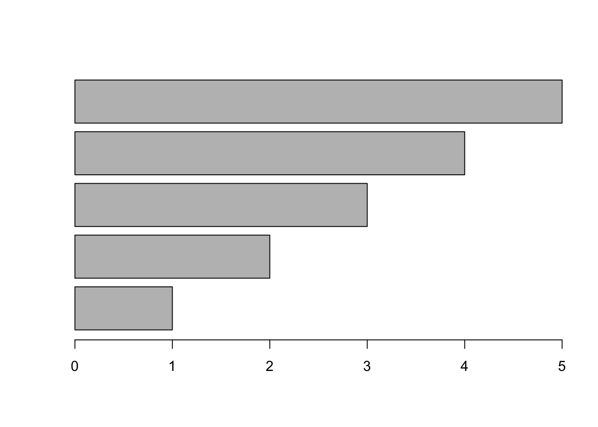
The code below demonstrates how to generate a histogram. This is a great way to visualize a continuous variable. The breaks argument handles how the data is binned.
var <- c(1.2,3.7,3,4.2,82,0,-6,10,3.9)
# Histogram of one variable
hist(var, col = "blue", breaks = 30)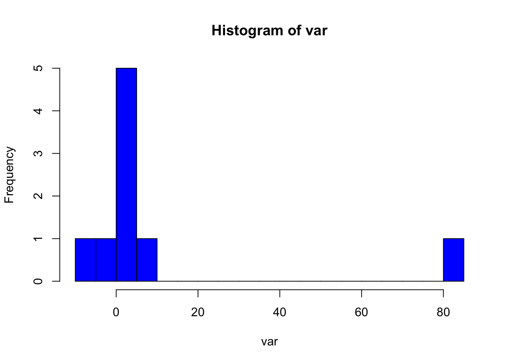
The code below generates a pie chart. This is a tool to show distribution of a single variable.
# Pie chart of one variable
pie(df$x, labels = names(x), radius = 0.8)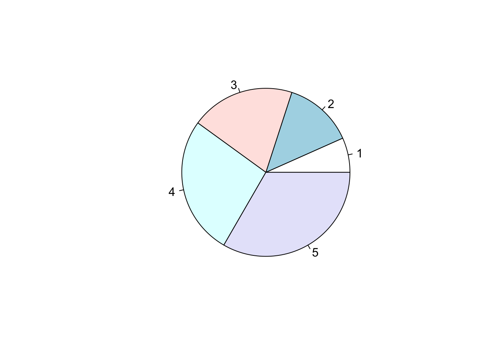
ggplot
The ggplot2 package (which loads automatically if you load tidyverse) uses a grammar of graphics. We build up a plot in layers! Let’s look at how this works as we build a scatterplot. The plot below sets up the axes, as we have told the function that our aesthetics are the x and y columns from our earlier dataframe.
df |>
ggplot(aes(x = x, y = y)) 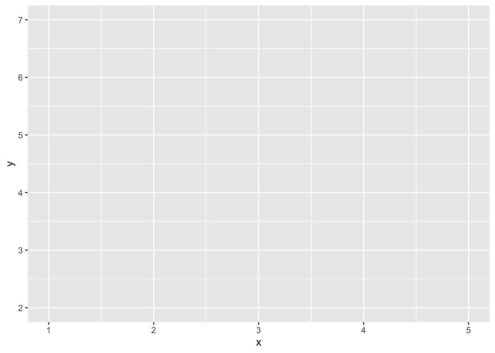
Now, let’s add the points. We do this by adding a point geom to our base plot.
df |>
ggplot(aes(x = x, y = y)) +
geom_point()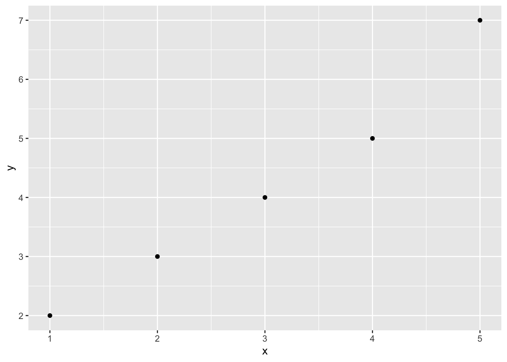
Now, we add a trendline.
df |>
ggplot(aes(x = x, y = y)) +
geom_point() +
geom_smooth(method = "lm", se = FALSE) #tells us to remove the standard error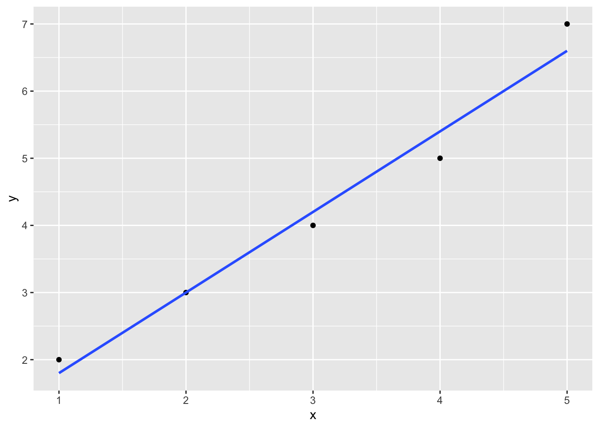
#bar and use linear regression to create the lineOf course, we want to label our graphs.
df |>
ggplot(aes(x = x, y = y)) +
geom_point() +
geom_smooth(method = "lm", se = FALSE) +
labs(title = "title", subtitle = "subtitle",
x = "x axis", y = "y axis",
caption = "caption game strong")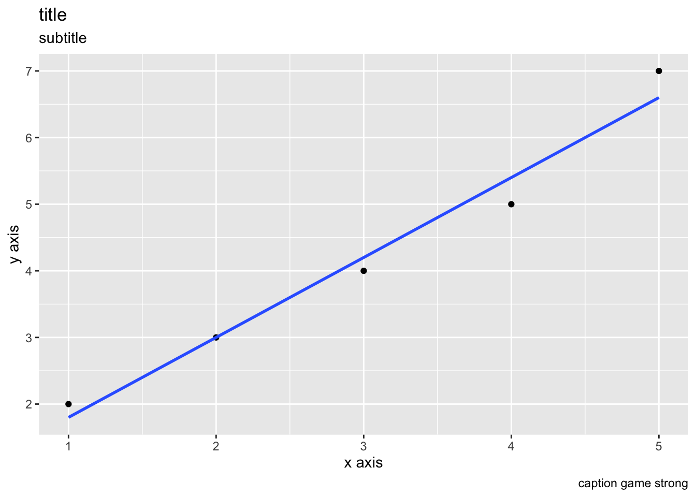
We can even customize the prettier aspects of our graph. Here, we use a theme to change the background.
df |>
ggplot(aes(x = x, y = y)) +
geom_point() +
geom_smooth(method = "lm", se = FALSE) +
labs(title = "title", subtitle = "subtitle",
x = "x axis", y = "y axis",
caption = "caption game strong") +
theme_bw()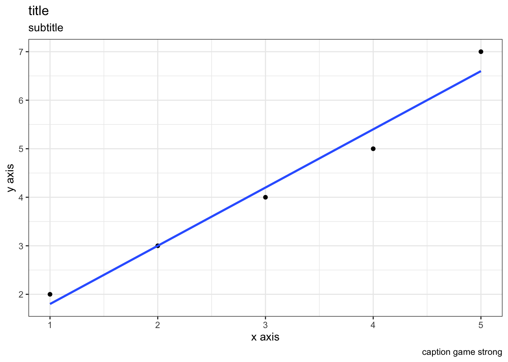
Now that we have a sense for how these commands build, we’re just going to demonstrate other geoms.
# Create a bar plot with ggplot2
df |>
ggplot(aes(x = x, y = y)) +
geom_bar(stat = "identity", fill = "blue") + #stat identity means the
#heights are straight from the data
labs(title = "title", x = "x-axis title", y = "y-axis title")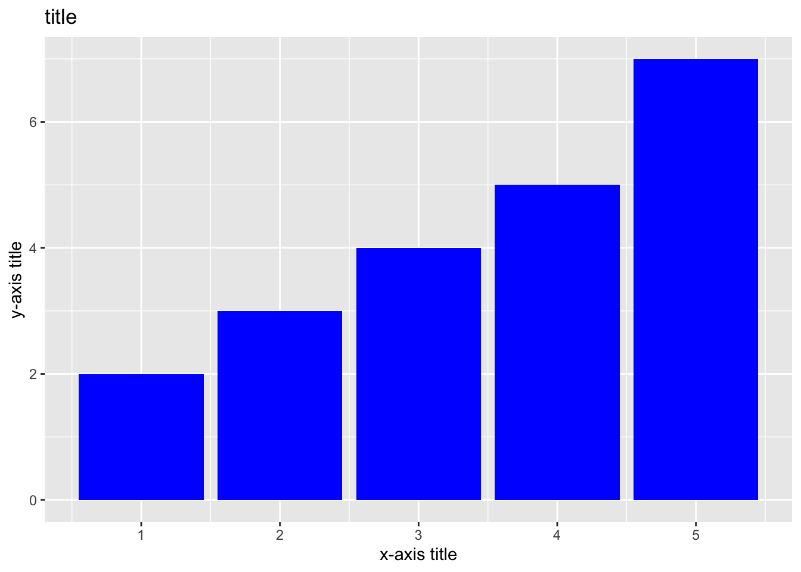
One quick thing to note is how aesthetics work in the geoms. Notice that the extra aesthetic added more information to our graph!
df |>
ggplot(aes(x = x, y = y)) +
geom_bar(stat = "identity", aes(fill = z)) +
labs(title = "title", x = "x-axis title", y = "y-axis title")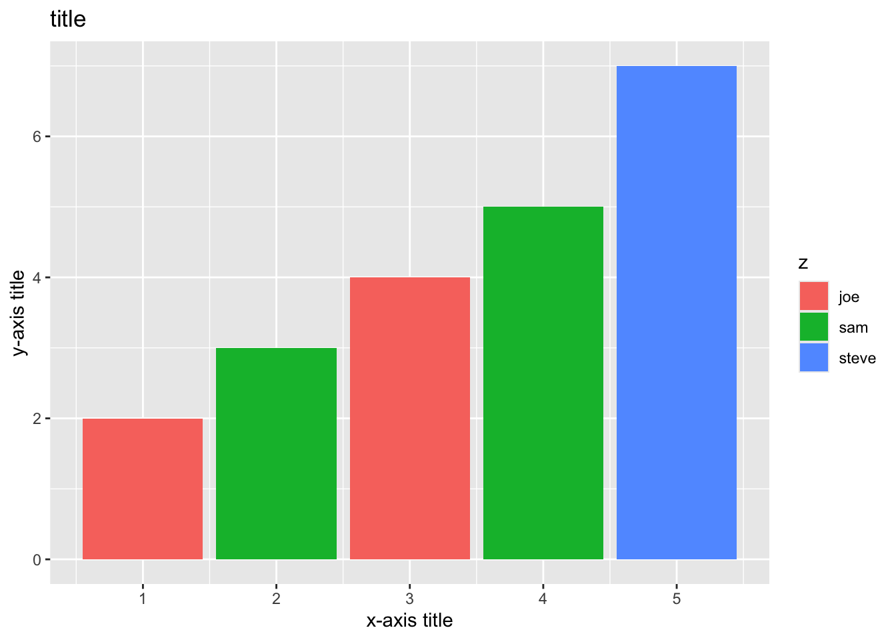
Let’s look at the customization of our histograms. The fill = “blue” argument sets the fill color of the bars in the histogram to blue, meaning the interior of each bar will be filled with a blue color.The color = “black” argument sets the color of the borders or outlines of the bars to black. This means that each bar in the histogram will have a black border around it. The binwidth = 0.5 argument means that each bin in the histogram will span a range of 0.5 units along the x-axis. This can be useful for controlling the level of detail in your histogram and how you want to group your data.
# Create a histogram with ggplot2
df |>
ggplot(aes(x = x, y = y)) +
geom_histogram(stat = "identity", binwidth = 0.5, fill = "blue", color = "black") +
labs(title = "title", x = "x-axis title", y = "y-axis title")In ggplot, we manipulate a bar chart to turn it into a pie chart. The argument is what changes the coordinates to a radial layout.
# Create a pie chart with ggplot2
data <- data.frame(x = c(1,1,1,2,3),
y = c(2,3,4,5,6))
data |>
ggplot(aes(x = "", y = y, fill = z)) +
geom_bar(stat = "identity", width = 1) +
coord_polar("y", start = 0) +
labs(title = "title") +
scale_fill_brewer(palette = "Set3") # You can change the color palette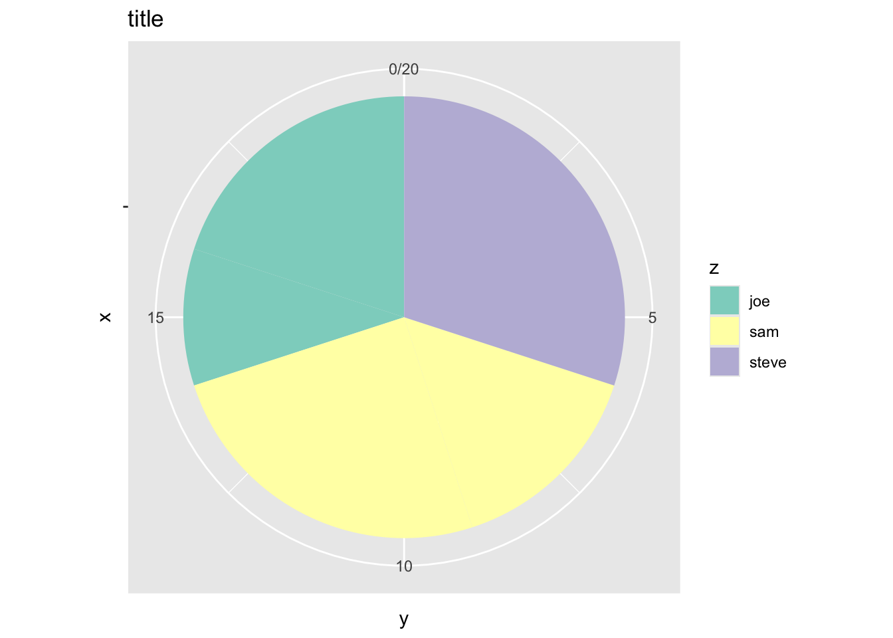
We now create an area chart.
# Create an area chart with ggplot2
df |>
ggplot(aes(x = x, y = y)) +
geom_area()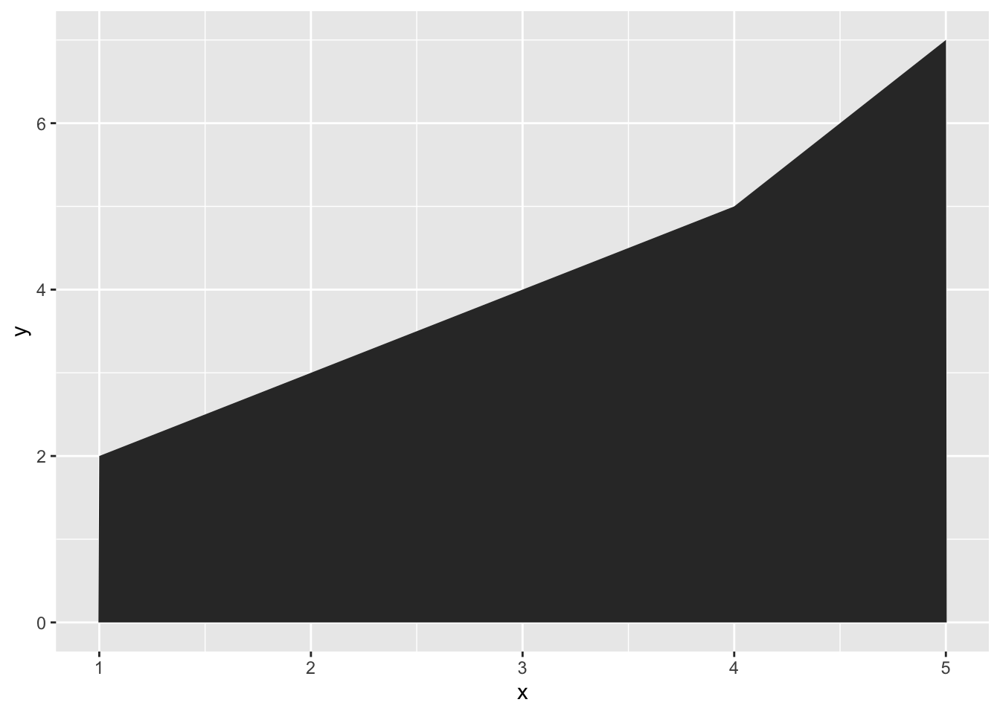
Here, we create a stacked area chart.
# Create a stacked area chart with ggplot2
df |>
ggplot(aes(x = x, y = y, fill= z)) +
geom_area()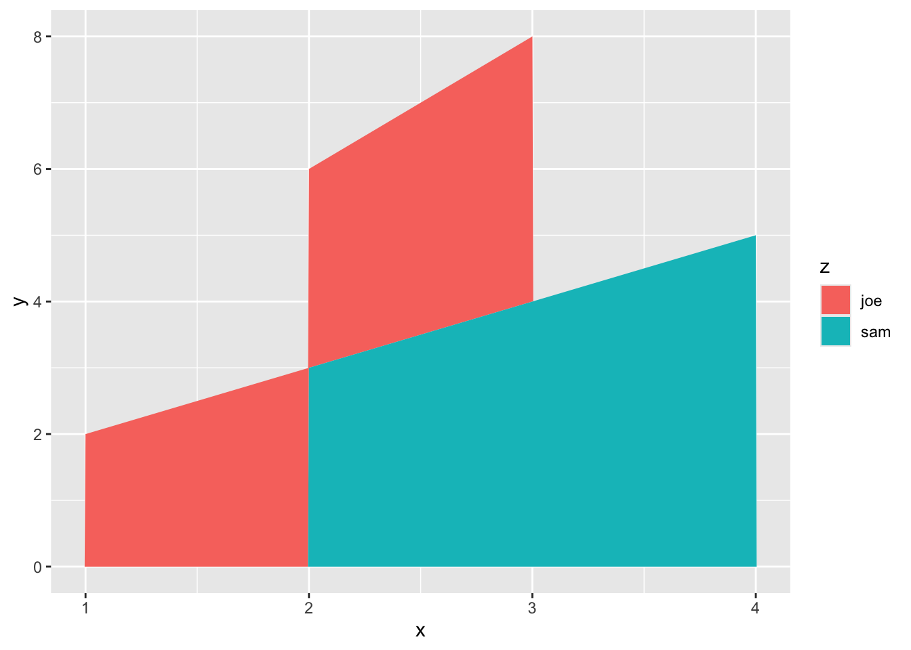
Here, we create a bubble plot. Bubbles can potentially overlap, which we fix by adjusting the transparency attribute, alpha.
# Create a bubble plot with ggplot2
df |> mutate(size = c(1,2,3,4,5)) |>
ggplot(aes(x = x, y = y, size = size)) +
geom_point(alpha = 0.7) +
scale_size_area() #makes points proportional to their size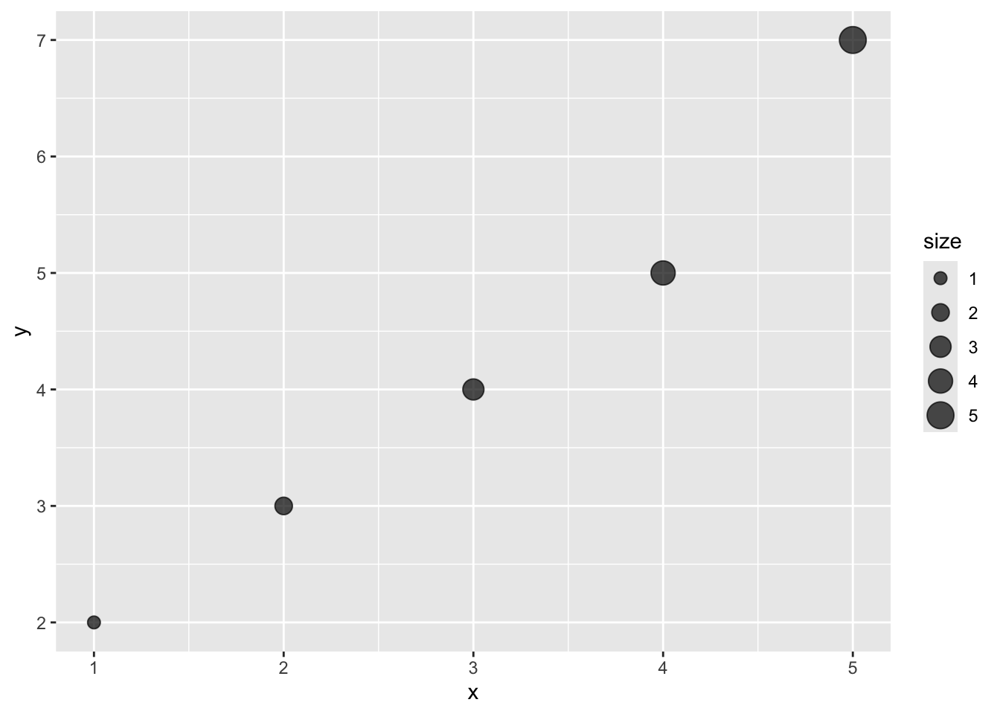
Here, we make a boxplot.
# Create a box plot with ggplot2
df |>
ggplot(aes(x = x)) +
geom_boxplot()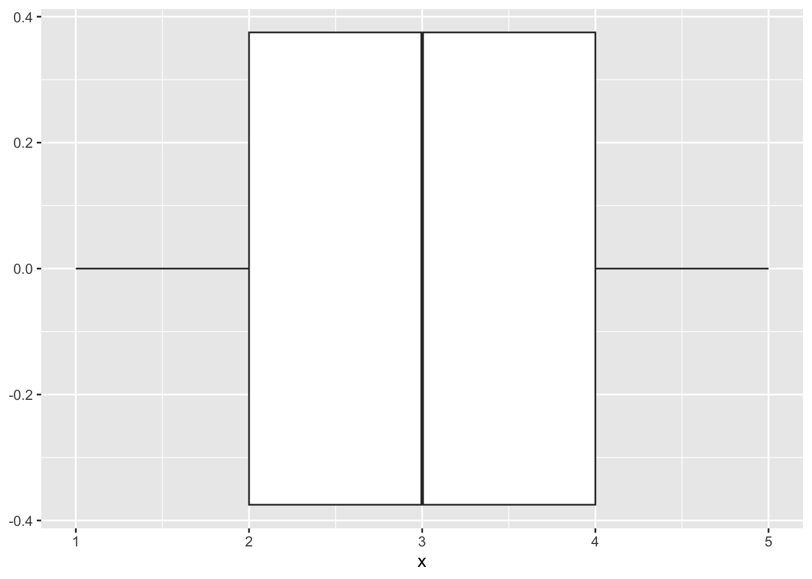
Here, we make a violin plot.
# Create a violin plot with ggplot2
df |>
ggplot(aes(x = x, y = y, fill = z)) +
geom_violin()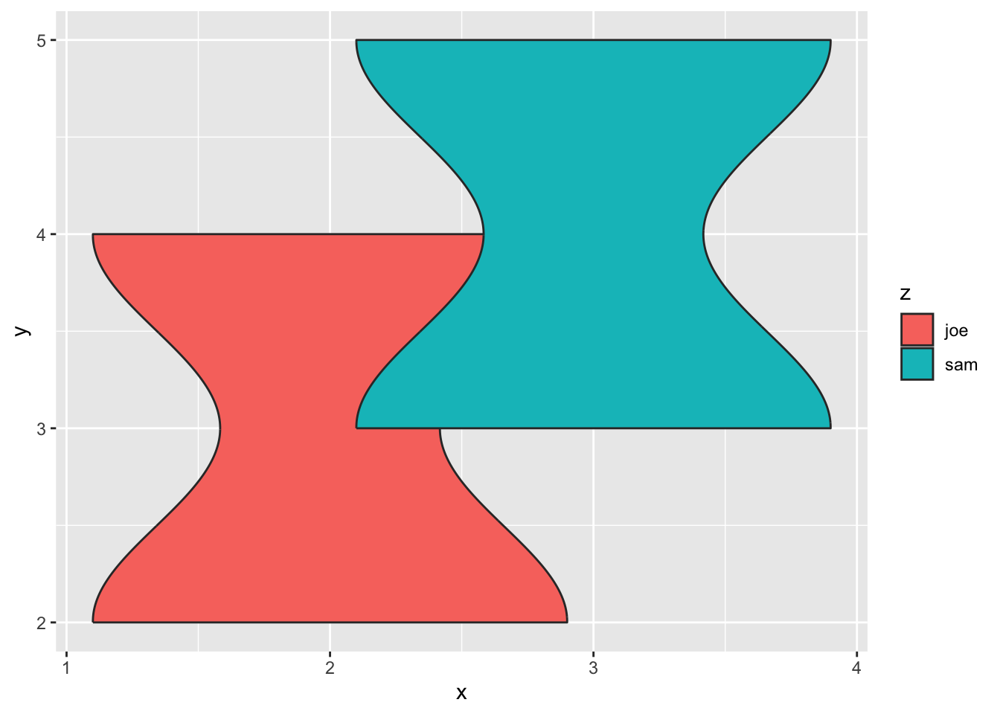
Here, we make a density plot.
# Create a density plot with ggplot2
df |>
ggplot(aes(x = x)) +
geom_density(fill = "magenta")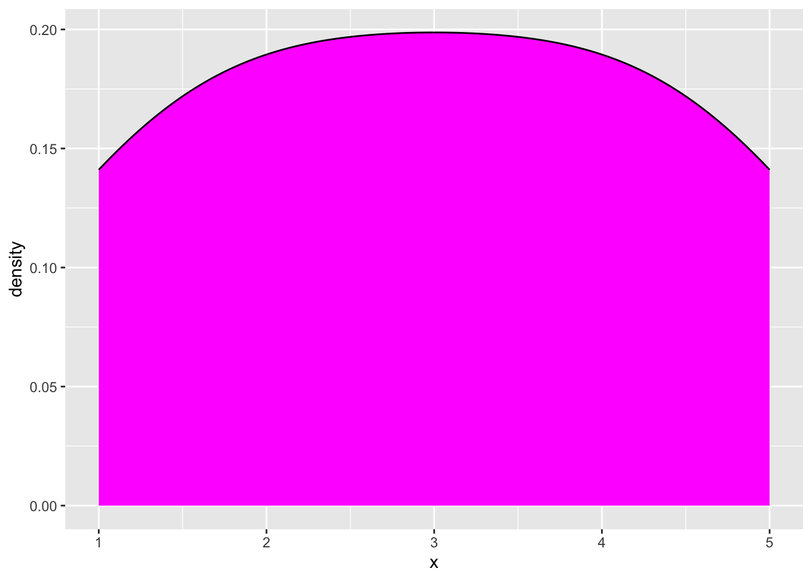
You Try!
Run the penguin chunk from the last practice section.
Make a histogram of penguin weight.
Make a scatter plot with x as bill length and y as body mass. Label it Figure 1.
Take the scatterplot you made in part 2 and facet it by island. Hint: Try runing ?facet_wrap in your console to look at how the facet works!